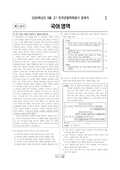

문제지


시험지를 먼저 풀어 보세요. 등급컷·표준점수·난이도는 흐리게 가려 뒀어요.
시험지를 먼저 풀어 보세요. 점수와 인원 수치는 흐리게 가려 뒀어요.
| 등급 | 표준점수 이상 | 인원(명) | 비율 |
|---|---|---|---|
| 1 | 137 | 15,135 | 4.17% |
| 2 | 127 | 27,455 | 7.56% |
| 3 | 117 | 43,785 | 12.06% |
| 4 | 105 | 60,773 | 16.73% |
| 5 | 93 | 72,171 | 19.87% |
| 6 | 82 | 64,040 | 17.63% |
| 7 | 75 | 44,870 | 12.36% |
| 8 | 70 | 25,976 | 7.15% |
| 9 | 53 | 8,945 | 2.46% |
시·도교육청 공개 자료
출처: 시·도교육청이 공개한 전국연합학력평가 성적 분석·통계자료(공개 자료 보기).
EBSi 응답자 기준으로 가장 많이 틀린 문항은 34번(2점)이고, 오답률은 65.6%입니다. 오답률 50%를 넘은 문항은 6개입니다.
| 순위 | 문항 | 배점 | 오답률 | 정답 | 많이 고른 오답 |
|---|---|---|---|---|---|
| 1 | 34번 | 2점 | 65.6% | ⑤ | ④ 32.3% |
| 2 | 16번 | 3점 | 62.2% | ① | ⑤ 27.9% |
| 3 | 27번 | 3점 | 57.9% | ② | ① 21.9% |
| 4 | 38번 | 3점 | 57.1% | ① | ⑤ 23.9% |
| 5 | 43번 | 2점 | 52.9% | ① | ③ 24.1% |
| 6 | 7번 | 2점 | 51.5% | ② | ③ 15.6% |
| 7 | 42번 | 3점 | 48.1% | ② | ④ 22.5% |
| 8 | 14번 | 2점 | 45.1% | ④ | ① 24.8% |
| 9 | 36번 | 2점 | 44.4% | ② | ③ 17.9% |
| 10 | 19번 | 3점 | 44.1% | ③ | ④ 20.9% |
| 11 | 25번 | 2점 | 42.9% | ④ | ⑤ 13.4% |
| 12 | 44번 | 2점 | 42.8% | ② | ③ 14.8% |
| 13 | 13번 | 2점 | 41.4% | ③ | ② 13.6% |
| 14 | 8번 | 2점 | 38.1% | ③ | ④ 18.9% |
| 15 | 3번 | 2점 | 38% | ③ | ⑤ 20.7% |
EBSi 가채점 응답자 기준 · 전 문항 중 오답률 상위 15문항
출처: EBSi 역대 등급컷·오답률 공개 화면. 가채점에 참여한 EBSi 이용자 응답이라 전체 응시자 정답률과는 다를 수 있습니다.
발행 기관: 시·도교육청(전국연합학력평가). 파일 위치: 이 사이트가 보관한 사본. 저작권은 발행 기관에 있습니다. 원본과 다르거나 게시 중단이 필요하면 연락처로 알려 주세요. 등급컷 출처 구분은 데이터 원칙에서 설명합니다.
막대 색은 역대 대비 난이도 · 진한 막대가 이 시험 · 막대를 누르면 그 회차로 이동
| 회차 | 1등급컷 | 표점 최고 | 1등급 표점 | 난이도 |
|---|---|---|---|---|
| 9월 학평2026년 고1이 시험 | — | — | — | — |
| 6월 학평2026년 고1 | 91 | 142 | 134 | 쉬움 |
| 3월 학평2026년 고1 | 89 | 146 | 134 | 매우 쉬움 |
| 10월 학평2025년 고1 | 91 | 142 | 134 | 보통 |
| 9월 학평2025년 고1 | 81 | 156 | 136 | 매우 어려움 |
| 6월 학평2025년 고1 | 86 | 150 | 136 | 어려움 |
| 3월 학평2025년 고1 | 84 | 153 | 135 | 쉬움 |
| 10월 학평2024년 고1 | 89 | 145 | 136 | 어려움 |
| 9월 학평2024년 고1 | 87 | 148 | 136 | 어려움 |
| 6월 학평2024년 고1 | 87 | 146 | 134 | 보통 |
국어는 교육청 채점 결과 1등급 구분 표준점수가 137점, 최고점이 149점(413명)으로 6월(134점, 142점)보다 어려웠습니다. EBSi 가채점 응답자 기준 오답률 50%를 넘은 문항은 6개였습니다.
가장 많이 틀린 34번(2점, 65.6%)은 가난한 처지를 노래한 정훈 「탄궁가」(가)와 박지원의 「이존당기」(나)의 공통점을 고르는 문항으로 응답의 32.3%가 같은 오답(4번)을 골랐습니다. 두 작품이 문제 상황에 대응하는 태도를 <보기>로 비교하는 38번(57.1%)도 어려웠습니다.
독서는 한 나라의 아이스크림 기업 수로 시작해 독과점과 경쟁 제한을 다룬 경제·법 지문(11~16번), 칸트와 헤겔이 각기 체계화한 자유(17~19번), 보상을 얻기 위한 행동을 유발하는 도파민 등 신경전달물질(20~23번)이었습니다.
16번(3점, 62.2%)은 디지털 이동 통신 기술 특허를 보유한 사업자가 자사 모뎀칩 이용 여부에 따라 실시료를 달리 매기는 <보기>를 해석하는 문항이었습니다. 작문의 27번(57.9%)은 갈등의 순기능을 다룬 추가 자료로 국민 참여형 정책 결정 논증문을 구체화하는 문항이었습니다.
문학은 점쟁이에게서 네 번 죽을 운수를 듣는 「정수경전」(31~33번), 「탄궁가」와 「이존당기」(34~38번), 밀가루 배급을 둘러싼 변두리 동네 주민들의 이야기인 김소진 「장석조네 사람들」(39~42번), 백석 「팔원」과 기형도 「기억할 만한 지나침」(43~45번)이었습니다.
화법·작문은 디지털 매체 시대의 의사소통 양상을 다룬 발표(1~3번), 학생회 자치 활동 지원금을 놓고 벌인 부서 간 협의(4~6번), 국민의 정책 결정 참여를 주장하는 논증문(24~27번), 배드민턴 연습 소감문(28~30번)이었습니다.